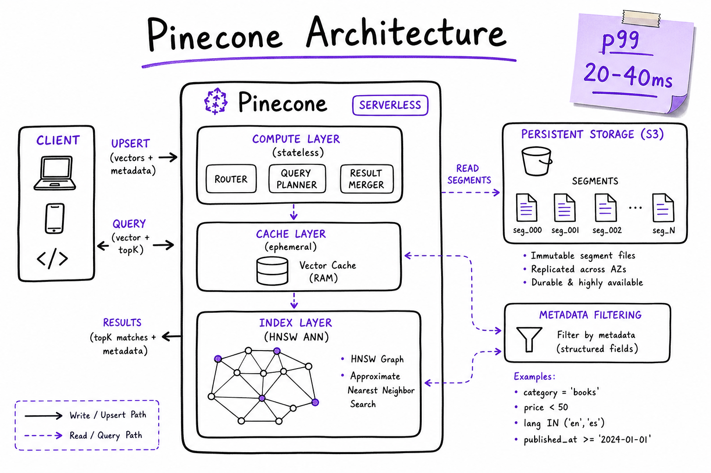
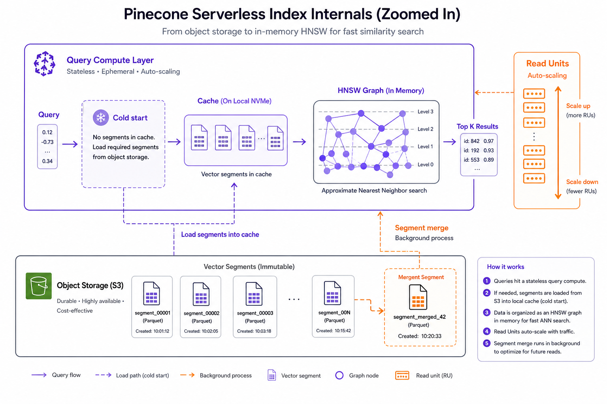
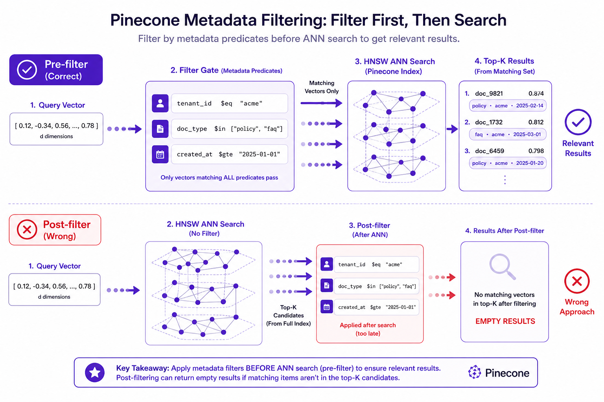

Pinecone // AI Tech
Fully managed vector database: serverless indexes, namespaces, metadata pre-filtering, sparse-dense hybrid, and upsert/query at scale without operating HNSW yourself. Part of the vector DB family covered in Vector Databases (overview) — compare with pgvector, Weaviate, and Chroma.

Pinecone architecture: client upsert/query → serverless index (S3-backed segments + compute cache) → HNSW ANN → metadata pre-filter → filtered top-k. Typical p99 query ~20–40 ms at millions of vectors.
01 — What & Why
Pinecone is a fully managed vector database SaaS. You send embeddings + metadata; Pinecone runs HNSW indexing, sharding, replication, and scaling. It is the “no platform team” choice for multi-tenant SaaS RAG at 10M+ vectors when you do not want to operate HNSW graphs yourself.
Functional requirements
- Upsert vectors with stable IDs, metadata JSON, and namespace isolation
- Query by dense vector with top-k, metadata filters, and optional sparse values
- Delete / fetch by ID or metadata filter for GDPR and doc lifecycle
- Namespaces for tenant isolation or embedding model version blue/green
- Hybrid sparse-dense vectors when keyword + semantic matter in one index
Non-functional requirements
- Latency: p99 query < 50 ms at millions of vectors (region co-location matters)
- Availability: managed SLA; no self-hosted failover planning
- Scale: serverless auto-scales read/write units; pod tier for extreme QPS
- Cost: storage + read units + write units; monitor namespace sprawl
- Security: API key auth; metadata ACL pre-filter; never expose keys client-side
Prerequisite: understand vector DB fundamentals and embedding models — dimension is fixed at index creation; model change = new namespace.
01a — Core Concepts
| Term | Definition | Gotcha |
|---|---|---|
| Index | Top-level container for vectors of fixed dimension. | Dimension immutable after create; wrong dim = upsert failure. |
| Namespace | Logical partition within an index (tenant, embed version). | Query must target correct namespace; empty namespace = no results. |
| Serverless | Usage-based tier; segments on object storage, compute on demand. | Cold start on brand-new indexes; warm with probe queries after deploy. |
| Pod | Dedicated hardware tier (legacy / extreme QPS). | Higher baseline cost; serverless preferred for new projects. |
| Metadata | JSON key-value attached to each vector for filtering. | Only indexed fields filter efficiently; keep payloads small. |
| Read / Write units | Billing dimensions for queries and upserts. | Batch upserts; avoid tiny per-chunk API calls. |
| Sparse values | Token-weight map for hybrid keyword leg. | Requires compatible index type; else dual-query + RRF in app. |
| Score | Similarity returned with each match (cosine / dot). | Log for reranker input and eval harness. |
01b — API / Interface Surface
Create index (serverless)
from pinecone import Pinecone, ServerlessSpec
pc = Pinecone(api_key=os.environ["PINECONE_API_KEY"])
pc.create_index(
name="rag-prod",
dimension=1536, # text-embedding-3-small
metric="cosine",
spec=ServerlessSpec(cloud="aws", region="us-east-1"),
)
index = pc.Index("rag-prod")
Upsert (batch ingest)
index.upsert(
vectors=[
{
"id": "handbook:chunk-42",
"values": embedding, # list[float], len=1536
"metadata": {
"tenant_id": "acme",
"source": "handbook.pdf",
"page": 12,
"doc_type": "policy",
"embed_model": "text-embedding-3-small_v1",
},
}
],
namespace="acme_v1",
)
# Batch 100–500 vectors; exponential backoff on 429
Query (retrieve)
results = index.query(
vector=query_embedding,
top_k=20,
namespace="acme_v1",
filter={
"tenant_id": {"$eq": "acme"},
"doc_type": {"$in": ["policy", "faq"]},
},
include_metadata=True,
)
for match in results["matches"]:
print(match["id"], match["score"], match["metadata"])
Delete by filter (GDPR)
index.delete(filter={"user_id": {"$eq": "user-9912"}}, namespace="acme_v1")
Contract to nail in interviews: idempotent upsert by chunk ID, namespace per embed model version, metadata pre-filter before top-k reaches the LLM, scores logged for reranker.
02 — When to Use / When NOT
| Scenario | Use Pinecone | Alternative |
|---|---|---|
| Multi-tenant SaaS RAG, 10M+ vectors | Yes — managed scale | Self-host Milvus/Qdrant if platform team exists |
| No vector ops expertise | Yes — zero HNSW tuning | pgvector if team knows Postgres |
| Already on Postgres, <5M vectors | Maybe not — added cost | pgvector + HNSW |
| Native BM25+vector in one query | Hybrid vectors or app fusion | Weaviate native hybrid GraphQL |
| SQL JOINs with orders/users | No — separate store | pgvector in Postgres |
| Local notebook / CI | No — overkill | Chroma embedded |
| Strong ACID + vector in one TX | No | pgvector |
03 — Architecture
App ──upsert/query──► Pinecone Index
├── namespace: tenant_a_v1
├── namespace: tenant_b_v1
└── namespace: acme_embed_v2 (blue/green)
Postgres/S3 ◄── chunk text + ACL (not in Pinecone alone)
Pinecone is the retrieval index, not the document store. Keep full chunk text elsewhere for citations and debugging.
04 — Deep Dive: Serverless
Serverless indexes decouple storage from compute: vector data persists on object storage as segments; query nodes load segments into cache and run HNSW. Read/write units scale with traffic — you do not provision pod sizes manually.
| Aspect | Serverless behavior | Ops implication |
|---|---|---|
| Storage | Segments on S3/GCS; durable across restarts | Storage billed per GB-month |
| Compute | Query nodes spin up / cache segments | First queries after idle may be slower (cold start) |
| Scaling | Auto read units under load | Monitor p99 after traffic spikes |
| Region | Pick same region as app + embed service | Cross-region adds 50–150 ms RTT |
Warm-up checklist after deploy
- Run 10–20 representative queries against each active namespace
- Verify p99 latency before shifting production traffic
- Co-locate Pinecone region with embedding API and app servers

Serverless internals: object-storage segments, query compute cache, HNSW in memory, auto-scaling read units. Pod tier remains for predictable extreme QPS if serverless limits bite.
05 — Deep Dive: Metadata Filters
Production RAG filters by tenant, ACL, doc type, and date before returning chunks. Pinecone applies metadata predicates during ANN search (pre-filter) — not after — when fields are indexed.
Filter DSL (Mongo-style)
filter = {
"tenant_id": {"$eq": "acme"},
"doc_type": {"$in": ["policy", "faq"]},
"page": {"$gte": 1, "$lte": 100},
"allowed_roles": {"$in": ["employee", "manager"]},
"created_at": {"$gte": "2025-01-01"},
}
| Operator | Example | Use case |
|---|---|---|
$eq | {"tenant_id": {"$eq": "acme"}} | Single tenant |
$in | {"doc_type": {"$in": ["faq"]}} | Multiple doc types |
$gte / $lte | date / numeric ranges | Time-bounded search |
$and / $or | compound predicates | Complex ACL rules |
Post-filter trap: retrieving top-k globally then filtering in app code yields 0–2 results when filters are selective. Use metadata pre-filter or namespace-per-tenant. See metadata filtering overview.

Pre-filter: metadata gate before HNSW. Post-filter after ANN: common bug — global top-20 may all fail tenant filter, starving the LLM of context.
06 — Hybrid Vectors
When queries mix exact tokens (SKUs, error codes) with semantic intent, combine sparse (keyword) and dense (embedding) signals. Pinecone supports sparse-dense vectors in compatible index configurations; otherwise run dual retrieval + RRF in the application layer.
| Approach | How | When |
|---|---|---|
| Sparse-dense in Pinecone | Upsert values + sparse_values; query both | Single-index hybrid; simpler ops |
| Dual index + RRF | BM25 in Elasticsearch + vector in Pinecone; fuse ranks | Existing ES investment |
| Rerank only | Vector top-50 → cross-encoder top-5 | Semantic-primary with keyword boost in reranker |
- Weaviate ships native BM25+vector hybrid in one GraphQL call — compare DX if hybrid is core.
- See Hybrid Search for RRF fusion math and alpha tuning.
- Always add reranker stage after hybrid top-20 (+30–80 ms).
07 — Index Lifecycle
Blue/green embedding model upgrade
- Create new namespace
tenant_v2(or new index) for new embed model - Re-embed full corpus async; upsert into v2 namespace
- Run golden-set recall eval: v2 must beat or match v1
- Flip query traffic to v2; deprecate v1 after soak period
- Delete v1 namespace to save storage costs
Day-2 operations
| Operation | Pattern |
|---|---|
| Upsert | Idempotent by chunk ID; batch 100–500; retry 429 with jitter |
| Delete doc | Delete by metadata doc_id filter or list IDs |
| GDPR | Delete vectors + purge source in docstore |
| Staging isolation | Separate namespace — never share with prod |
08 — Pinecone vs pgvector vs Weaviate vs Chroma
| Pinecone | pgvector | Weaviate | Chroma | |
|---|---|---|---|---|
| Deployment | Fully managed SaaS | Postgres extension | Self-host or cloud | Embedded / local |
| Ops burden | Lowest | Low if on Postgres | Medium–high self-host | Lowest (dev) |
| Hybrid | Sparse-dense / app fusion | SQL FTS + manual fusion | Native GraphQL hybrid | Limited |
| Multi-tenant | Namespaces + metadata | SQL WHERE + partitions | Tenant shards per class | Collections (weak isolation) |
| Best scale | 10M–billions | <1–10M per instance | 1M–100M+ | <500K dev |
Full comparison matrix: Vector Databases section 08.
09 — Production & Ops
| Concern | Practice |
|---|---|
| API keys | Server-side only; rotate; separate keys per env |
| Latency | Track p50/p99; co-locate region; warm after deploy |
| Cost | Prune stale namespaces; batch upserts; right-size top_k before rerank |
| Recall | Weekly golden-set eval; log scores; alert on drop >5% |
| Rate limits | Client-side token bucket; queue ingest workers |
| Observability | Log query_id, namespace, top_k, filter, latency, match IDs |
# Ingest worker pattern
def upsert_batch(index, namespace, rows, batch_size=200):
for i in range(0, len(rows), batch_size):
batch = rows[i:i+batch_size]
retry_with_backoff(lambda: index.upsert(vectors=batch, namespace=namespace))
10 — Where It Shows Up
- Vector Databases (overview) — HNSW, metadata, hybrid concepts
- pgvector · Weaviate · Chroma — sibling deep dives
- RAG End-to-End — retrieval stage in full pipeline
- Embedding Models — dimension and metric choice
- Rerankers — stage after Pinecone top-k
- LangChain / LlamaIndex — VectorStore integrations
- Chunking Strategies — garbage chunks → garbage neighbors
11 — Common Pitfalls
- Wrong dimension at index create: 1536 vs 3072 mismatch — full re-index required.
- One namespace for staging + prod: test upserts pollute production retrieval.
- Post-filter in app code: selective tenant filter after global top-k → empty context.
- No embed version in namespace: silent mix of v1/v2 vectors after partial re-embed.
- API key in browser: exposed credentials; always proxy through backend.
- Tiny upsert batches: write-unit cost explosion; batch 100–500.
- Vectors without source pointer: metadata missing
source_uri— citations break. - Ignoring hybrid: pure vector misses exact SKUs users paste verbatim.
12 — Interview Q&A
Why Pinecone over self-hosted Milvus or Qdrant?
Serverless vs pod tier — when does each win?
How do you implement multi-tenancy in Pinecone?
tenant_id — fewer namespaces to manage. Never rely on the LLM to ignore wrong-tenant chunks — enforce at retrieval.Explain metadata filter syntax and pre-filter vs post-filter.
$eq, $in, $gte, $and. Pinecone pre-filters during ANN when fields are indexed. Post-filter in app after top-k is a common bug when filters are selective — use pre-filter or over-fetch 5×k (wasteful). Prefer namespace or pre-filter.Upsert best practices for production ingest?
doc_id:chunk_idx); batch 100–500 vectors; include embed_model in metadata; retry 429 with exponential backoff; async queue for large corpora; never block user requests on full re-embed.How do you tune query latency?
What happens when you change the embedding model?
embed_model=text-embedding-3-small_v1.Hybrid search in Pinecone — how?
What drives Pinecone cost?
GDPR delete for a user — walk through it.
user_id filter across namespaces; verify docstore/object storage also purged; audit log deletion job; confirm query no longer returns deleted IDs on golden tests.